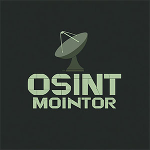

OSINT Tactical Overwatch
NODE: OSINT_MONITOR_01
STATUS: ACTIVE_GATHERING
ENCRYPTION: AES-256 (VERIFIED)
[14:02:44.110]
INFO: Packet sniff successful on node IP: 192.168.x.x (Langtang Corp Subnet).
[14:02:45.301]
INFO: Analyzing structural metadata from 'Keep It Real Bro' podcast feed. Routing match found: OOO Novator Strategies -> X-CARTEL-SINALOA-NULL.
[14:03:10.992]
WARNING: Anomaly detected near Langtang industrial zone. Vehicle registry match: Vance, Chloe. Status: Abandoned.
[14:03:15.004]
INFO: Cross-referencing missing persons database. Local police suppression detected (ID: Officer Vance). Logging collusion pattern.
[14:04:01.222]
INFO: Scraping 'Zero State Media' donor lists. 42% overlap with offshore accounts linked to 'The Evaluator' clinic.
[14:05:11.880]
CRITICAL: Secure comms intercepted between
Dominic Ryker
and Unknown Actor (Location: Prague). Decryption in progress...
[14:05:12.001]
INFO: Everything leaves a digital wake. Compiling target matrix.
... AWAITING PACKETS ...
CURRENT ACTIVE OBSERVER

SYSTEM METRICS
NODES TRACKED: 101
EXPOSED VECTORS: 47
COMPROMISED ENTITIES: 88%
"The truth is just a data visualization problem."